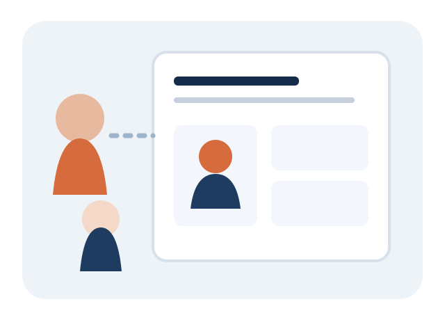

Apresentar a organização
Manter informações de identificação e perfil para que candidatos reconheçam a empresa responsável pelas oportunidades.
Uma experiência empresarial voltada à apresentação da organização, publicação de vagas e acompanhamento das pessoas interessadas.

Manter informações de identificação e perfil para que candidatos reconheçam a empresa responsável pelas oportunidades.
Divulgar cargos, localidades, modalidades, descrições e requisitos para orientar quem deseja se candidatar.
Consultar candidaturas enviadas às vagas e visualizar as informações disponibilizadas pelos candidatos.
Utilizar o painel empresarial para organizar vagas e acompanhar as atualizações registradas na plataforma.
Comece pelo cadastro e veja as opções disponíveis para sua organização.